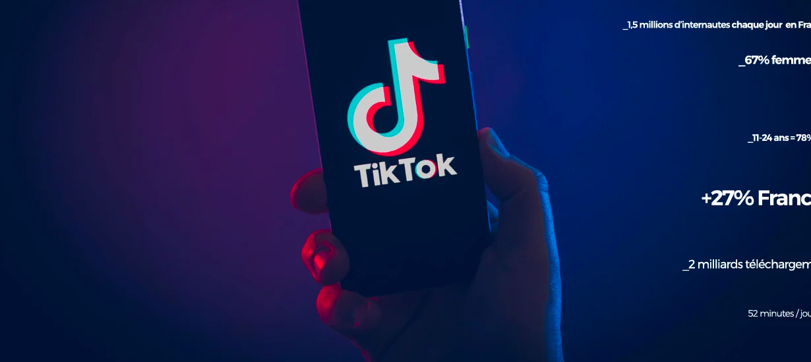

TikTok presentation

TikTok is a social network that was born in September 2016. It is an application that is based on the principle of video sharing: reading, dancing, humour, etc ... In France, TikTok has 14.9 million active users each month, and 7 million daily visitors. It corresponds to nearly 22% of French people who regularly consult this social. Worldwide, TikTok has 1.7 billion monthly active users. This figure shows its great evolution since its creation in 2018.
Its algorithm analyses how we watch videos, if we stay until the end of the video ou if we watch several times, if we share or like, or if we quickly skip the video. Also, its artificial intelligence analyses its data in order to provide us more relevant videos, which are likely to please us. This network is in full expansion and is experiencing very strong growing. But there are many points of worrying in the face of this social network which is experiencing strong growth. In particular, strong addiction problems, or a very special policy, which makes the social network different in China compared to the rest of the world.
https://blog.digimind.com/fr/agences/tiktok-chiffres-et-statistiques-france-monde-2020#mondehttps://fr.wikipedia.org/wiki/TikTok